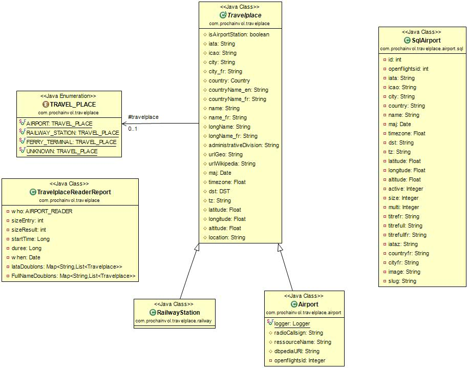

On peut se logger de deux manières :
- Pour les utilisateurs qui ne sont pas 'travelshaker', par
une page de login classique.
URL = http://prochainvol.com:8080/airlines.
Durée de la session = 3mn.
En réponse on reçoit la page d'acceuil de l'admin travelshaker - Pour l'utilisateur 'travelshaker'.
URL = http://prochainvol.com::8080/airlines/StartTravelShacker.
Durée de la session = 12h.
En réponse, si tout se passe bien, on reçoit le json {"response":"ok"}, sinon erreur.
Réglée pour l'instant en mémorisant seulement dans l'api travelshaker, pour la durée de vie de l'api (sans rémanence dans la base), les nouveaux iata rencontrés, qui ont été envoyés par les providers


Trois sources de récupération
- Wikipedia (semi manuellement par extraction en java des informations d'une table html recupérée par copie manuelle)http://fr.wikipedia.org/wiki/ISO_3166-1
- Wikipedia (semi manuellement par extraction en java des informations d'une table html recupérée par copie manuelle)http://en.wikipedia.org/wiki/ISO_3166-1
- Dbpedia (automatiquement par requète sparql depuis java sur le site dbpedia endpoint) http://dbpedia.org/sparql ou bien http://dbpedia.org/snorql/
Parmis ces nouvelles information on trouve un abstract sur le pays en français et en anglais, mais aussi des informations éventuelles en plus (si celle-ci est présente dans dbpedia). Par exemple s'il conduisent à droite ou à gauche ; leur monnaie ; leur capitale ...
On trouve aussi un classement de 185 pays répartis en 65 groupes définis par dbpedia.
Voici les 65 groupes actuels sous dbpedia : Rechercher les groupes en sparql sur dbpedia
Voici les 185 pays ayant actuellement un groupe sous dbpedia : Rechercher les pays ayant un groupe sur dbpedia